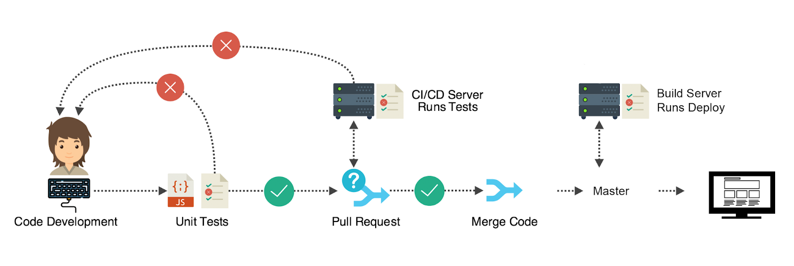

Gerenciamento de Configuração de Software
Gerenciamento de Configuração de Software é uma área da engenharia de software responsável por fornecer o apoio para o desenvolvimento de software. Suas principais atribuições são o controle de versão, o controle de mudança e a auditoria das configurações.
Controle de Versão
Controle de versão é um sistema que registra alterações em um arquivo ou conjunto de arquivos ao longo do tempo para que você possa lembrar versões específicas mais tarde.
Na função prática da Engenharia de Software, é um software que tem a finalidade de gerenciar diferentes versões no desenvolvimento de um documento qualquer. Esses sistemas são comumente utilizados no desenvolvimento de software para controlar as diferentes versões — histórico e desenvolvimento — dos códigos-fontes e também da documentação.
Controle de Mudanças
Através do Git e GitHub, é possível utilizar juntamente do controle de versões o controle de mudanças realizando a criação de "Branchs". Essa entrutura na criação código, com a tradução literal podemos traduzir para "galho", ou seja, cria uma versão separada do código principal do projeto com determinadas mudanças e nela é possível comparar o que está sendo modificado em relação a versão principal do projeto.

Integração contínua
A integração contínua é a prática de mesclar todas as cópias de trabalho dos desenvolvedores em uma linha principal compartilhada, várias vezes ao dia, ou seja, isso significa que cada "Branch" realizada por cada desenvolvedor possui uma modificação específica no programa e com a integração contínua é possível deixar o código sempre atualizado conforme as atualizações, "branchs", vão surgindo.
